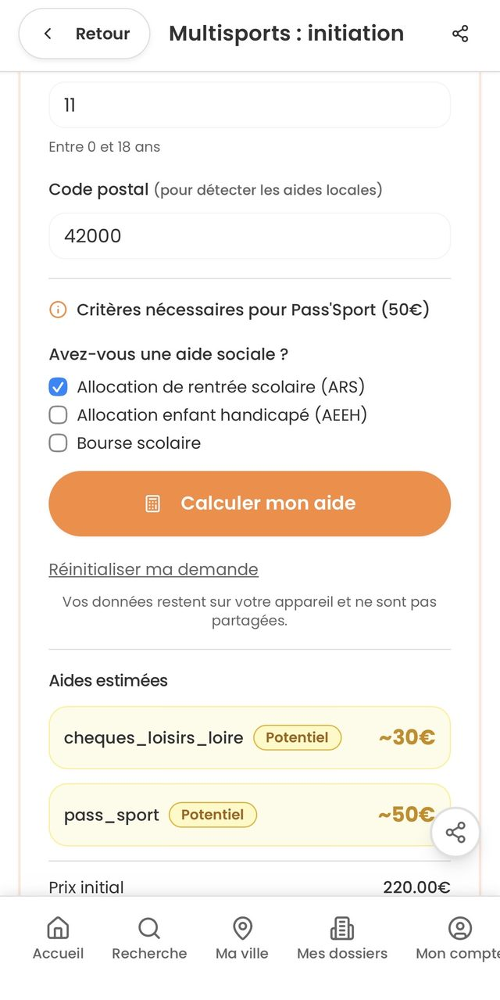
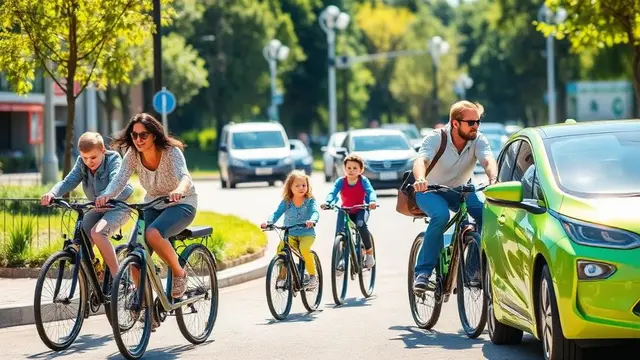
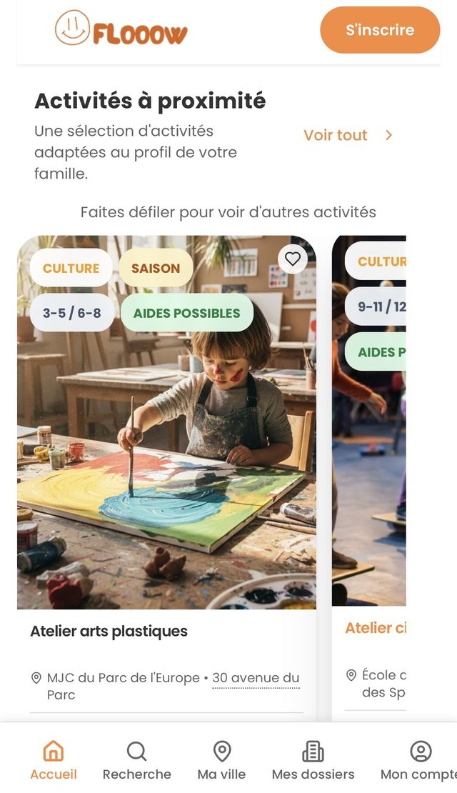
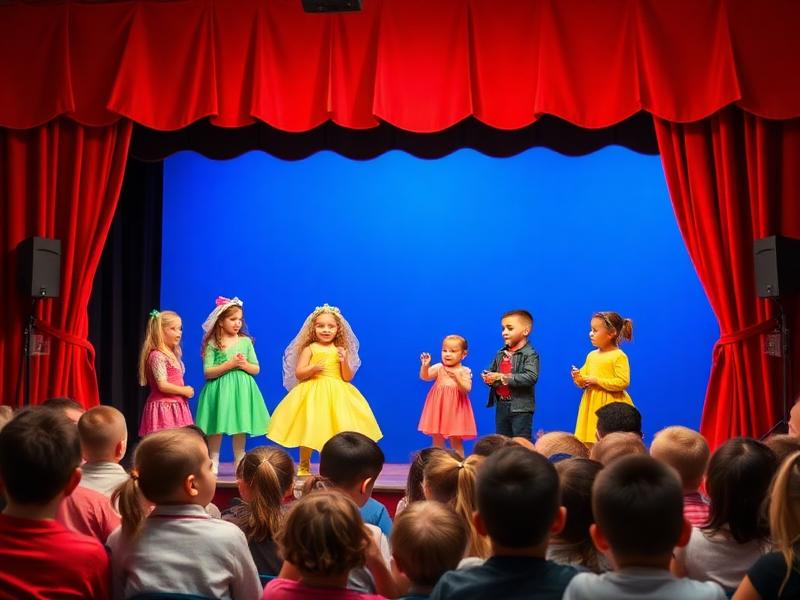
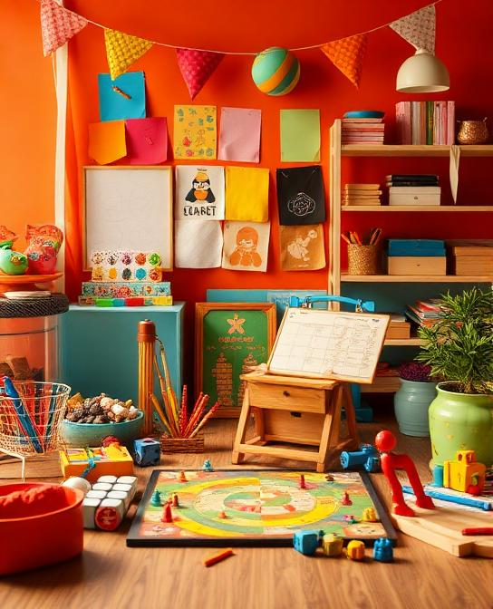
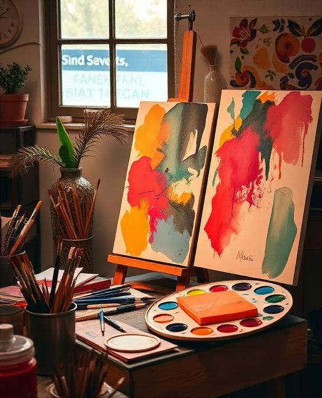
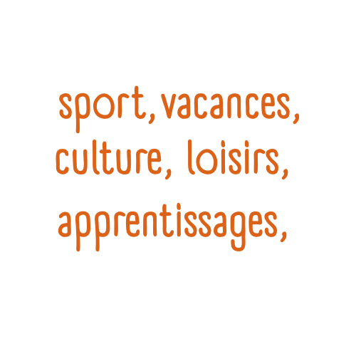
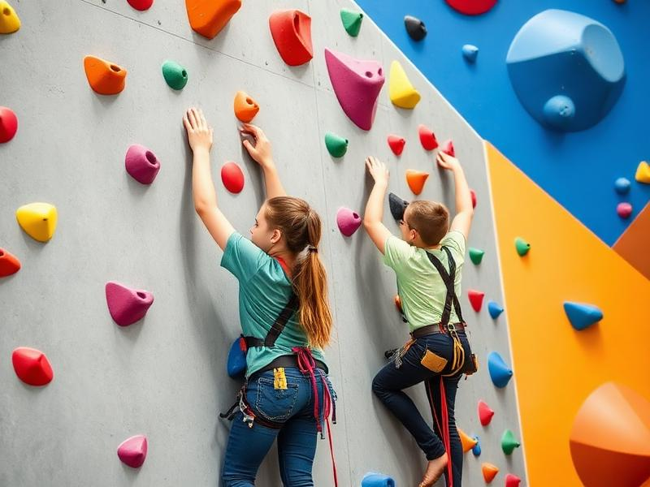
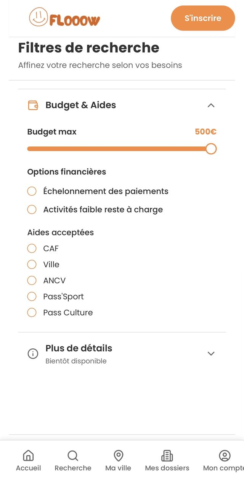
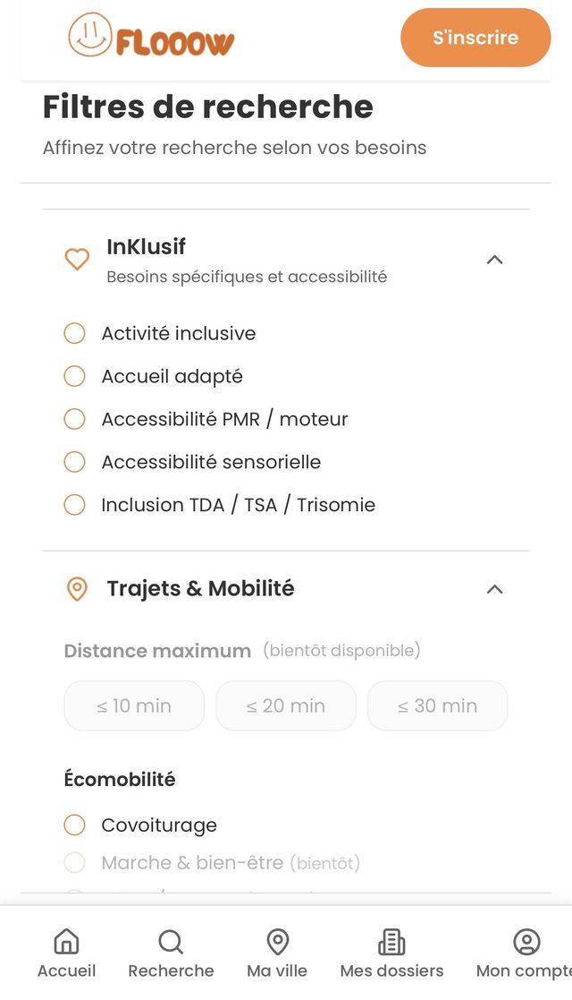

Flooow réunit activités, aides financières et solutions de mobilité pour aider les familles à passer de l'envie à l'inscription.




Entre le coût, les aides, les horaires, les trajets et les informations dispersées, beaucoup de familles renoncent avant même d'inscrire leur enfant.


Flooow rassemble familles, jeunes, structures, associations et territoires autour d'un objectif simple : rendre les activités plus visibles, plus accessibles et plus faciles à rejoindre.
Découvrir des activités utiles aux enfants et aux jeunes.
Identifier les aides qui peuvent changer une décision.
Mieux anticiper les trajets.
Valoriser les structures locales.
Aider les territoires à comprendre les freins réels.
Faire remonter les besoins sans parcours compliqué.
Faites partie des premiers utilisateurs Flooow et découvrez une nouvelle façon de relier activités, aides et mobilité.
Sport, culture, loisirs, plein air, vacances : des activités adaptées, ancrées dans les territoires, plus simples à repérer.


Dites-nous où vous êtes : Flooow vous montre ce qui existe sur votre territoire.
Repérez les aides possibles avant de renoncer ou de choisir : le coût réel d'une activité est souvent bien plus bas que le prix affiché.
Pass'Sport, Pass Culture, dispositifs CAF et MSA : des aides qui existent, mais que beaucoup de familles ne mobilisent pas faute d'information.
Coupons sport, chèques loisirs, aides de la ville ou du département : des dispositifs propres à chaque territoire, réunis au même endroit.
Distinguer prix affiché, aides cumulables et coût final : de quoi décider sereinement, avant l'inscription.
Partagez votre situation : la communauté Flooow aide à repérer ce qui peut changer une décision.
Le trajet fait souvent renoncer avant même le premier contact. Flooow aide à visualiser les options pour s'y rendre plus simplement.
Bus, tram, train : voir les options et les durées de trajet autour de chaque activité.
Vélo, marche, covoiturage : des solutions plus simples qu'on ne croit, valorisées activité par activité.
Identifier les besoins d'accompagnement et les relais possibles pour que le trajet ne soit plus un frein.
Découvrez les activités et les solutions de mobilité sur votre territoire.
Flooow agit sur trois frictions qui se cumulent : repérer l'offre, comprendre les aides, anticiper l'accès réel.
Des aides existent. Des activités existent. Mais les familles peinent encore à relier ces informations dans un parcours lisible.
Personnes citent le manque d'information sur les aides comme première cause de non-recours
Source : études non-recours 2022-2024En moyenne, une famille doit consulter pour trouver l'offre, comprendre les aides et vérifier l'accès
Observation terrain FlooowLe Pass'Sport, les aides CAF/MSA et les dispositifs locaux varient selon l'âge, la situation et le territoire
Données 2025-2026Aider à repérer des offres sportives, culturelles, de loisirs, de vacances ou d'apprentissage adaptées aux enfants — par âge, lieu, accessibilité et disponibilité.
Aider à distinguer prix affiché, aides possibles et reste à charge. Rendre lisible ce qui est cumulable, ce qui est conditionnel, ce qui est local.
Ne pas séparer l'offre, les démarches, les contraintes d'horaires et les questions d'accès. Remettre ces éléments dans un seul parcours lisible.
Flooow ne remplace pas les structures, les collectivités ou les dispositifs existants. Le projet cherche à mieux les relier pour rendre le parcours des familles plus clair et plus proche du terrain.
Pas de "tout en un" magique. Pas de chiffres gonflés. Pas de collecte excessive. Pas de couverture nationale immédiate. Flooow préfère une progression territoriale lisible, documentée et utile.
Des besoins concrets, des freins remontés, des retours d'usage. Les familles sont au cœur de la démarche.
Des envies réelles, des formats crédibles, des lieux et horaires observés. La parole des jeunes, directement.
Des structures, associations et collectivités qui aident à rendre l'offre plus visible et plus actionnable.
Les écrans réels de l'application : activités à proximité, aides, simulateur, accessibilité.


La meilleure manière de faire avancer Flooow est de partir de situations réelles.
Flooow aide à relier activités, aides et accès réel pour éclairer l'action locale. Pour les collectivités, associations, équipements, centres sociaux, clubs et partenaires locaux.
Mieux documenter les besoins remontés par les familles et les jeunes sur votre territoire. Identifier les freins les plus fréquents.
Rendre visibles les structures, les activités, les aides disponibles et les points d'accès. Mettre en lien les acteurs locaux.
Hiérarchiser les freins récurrents et suivre une démarche pilote. Produire une synthèse partageable entre partenaires.
Des modules honnêtes, avec leur niveau de maturité affiché.
Visualiser les activités, publics, tarifs, contacts, aides connues et informations d'accès.
Voir remonter les motifs récurrents : information, coût, aides, horaires, déplacement.
Produire une synthèse territoriale simple à partager entre partenaires du projet.
Hiérarchiser les interventions prioritaires selon les freins identifiés sur le terrain.
Restitution anonymisée et agréée des données collectées au bénéfice du territoire.
Accès privé aux documents de travail, ressources partagées et vues de suivi du pilote.
Identifier les publics prioritaires, les acteurs à mobiliser et le périmètre territorial du pilote.
Cartographier l'offre existante, les aides disponibles et les points d'accès sur le territoire.
Via Flooow Family, Flooow Jeunes et Flooow Territoires — besoins, freins, envies remontés directement.
Synthèse partagée avec les partenaires du pilote, préconisations et plan de déploiement progressif.
Flooow ne demande que les informations utiles au premier contact. Les premiers formulaires n'ont pas vocation à recueillir des données sensibles.
Données minimisées : uniquement ce qui est nécessaire à la démarche pilote.
Pas de données sensibles au premier contact — familles comme structures.
Finalité explicite : améliorer l'accès aux activités sur votre territoire, rien d'autre.
Hébergement et conformité documentés dans notre page Confiance.
Partons d'un besoin concret, pas d'un discours générique.
Votre retour terrain est ce qui rend Flooow utile. De 30 secondes à un engagement régulier : chaque niveau compte, choisissez le vôtre.
Un geste rapide qui pèse vraiment
Flooow s'installe là où les familles le demandent. Dites-nous où vous êtes : chaque demande compte pour ouvrir le prochain territoire.
Qu'est-ce qui donne envie de participer ? Qu'est-ce qui décourage ? Quels lieux, quels horaires, quels formats manquent ?
Un retour concret qui nourrit la cartographie des freins
Vous cherchez une activité pour votre enfant ? Vous hésitez à cause du coût, des aides, du trajet ou des démarches ? Partagez ce qui bloque aujourd'hui.
Vous proposez une activité, accompagnez des familles ou représentez une structure ? Référencez-vous, contribuez ou demandez un échange.
Construire Flooow avec nous, dans la durée
Faites partie des premiers utilisateurs Flooow : découvrez une nouvelle façon de relier activités, aides et mobilité — et vos retours sont partagés dans le journal Flooow.
Collectivité, association, équipement : explorons ensemble une démarche pilote sur votre territoire, à partir d'un besoin concret.
Vous cherchez une activité pour votre enfant ? Dites-nous simplement ce qui bloque aujourd'hui. Votre retour aide à améliorer l'accès pour toutes les familles.
Qu'est-ce qui donne envie de participer ? Qu'est-ce qui bloque ? Quels lieux, quels horaires, quels formats manquent ? Parlez-nous directement.
Vous proposez une activité, accompagnez des familles ou représentez une structure locale ? Cette porte d'entrée est faite pour vous.
En 20 à 30 minutes, nous regardons ensemble votre contexte, vos publics et la meilleure manière d'engager la démarche. Pas de discours générique — une conversation concrète.
Pas de promesse gonflée. Pas de collecte excessive. Flooow construit sa crédibilité sur des engagements concrets et vérifiables.
Flooow ne demande que l'essentiel au premier contact. Les formulaires se limitent à 5 champs maximum. Aucune donnée sensible (santé, handicap, situation familiale détaillée) n'est demandée lors des premiers échanges.
Les données collectées ont une seule finalité : améliorer l'accès aux activités pour les enfants sur les territoires. Elles ne sont ni revendues, ni utilisées à des fins publicitaires ou commerciales.
Vous disposez d'un droit d'accès, de rectification et de suppression de vos données. Pour toute demande : contact@flooow.fr. Délai de réponse : 72h maximum.
Les données sont hébergées en Europe. Aucun transfert hors UE n'est effectué sans votre consentement explicite. La politique d'hébergement est documentée et disponible sur demande.
Flooow est conçu pour être lisible et utilisable par tous les publics, sur tous les supports.
Optimisé pour smartphone, tablette et bureau.
Respect des niveaux WCAG 2.1 AA pour tous les textes.
Zéro jargon institutionnel. Phrases courtes, actions directes.
5 champs max, labels explicites, messages d'erreur clairs.
Déclaration d'accessibilité : Ce site est en cours d'amélioration continue. Si vous rencontrez un problème d'accessibilité, signalez-le à contact@flooow.fr — nous traitons ces retours en priorité.
Flooow est une démarche pilote, pas une plateforme nationale déployée. Le projet progresse territoire par territoire, en collaboration avec les acteurs locaux. La progression est lisible et documentée, territoire par territoire.
Flooow se construit avec les familles, les jeunes et les territoires. Ateliers, entretiens et retours d'usage alimentent chaque évolution. Aucune fonctionnalité n'est développée sans validation terrain préalable.
Les informations sur les aides (Pass'Sport, CAF/MSA, dispositifs locaux) sont vérifiées régulièrement. Chaque page stratégique porte une mention de dernière mise à jour. Dernière révision : juin 2026.
Votre besoin a bien été reçu. Chaque retour de famille aide à mieux comprendre ce qui bloque et à améliorer l'accès aux activités pour tous.
Si vous avez laissé votre email, nous vous tiendrons informé des avancées sur votre territoire.
Ton retour compte vraiment. Il va directement alimenter la réflexion sur les formats et les offres qui manquent pour les jeunes de ton territoire.
Votre structure a bien été référencée. Nous reviendrons vers vous prochainement pour échanger sur la suite.
Nous reviendrons vers vous sous 48h pour confirmer le créneau. En attendant, vous pouvez consulter notre page Territoires pour en savoir plus sur la démarche.
Flooow avance territoire par territoire, en profondeur plutôt qu'en surface. Et Flooow s'installe là où les familles le demandent : votre commune n'est pas encore couverte ? Votre demande compte comme un vote.
Nos avancées, nos décisions et nos chiffres réels, datés et partagés en toute transparence — y compris quand ça n'avance pas comme prévu.
Double navigation projet / communauté, entrée par territoire, échelle d'engagement et lancement de ce journal. Objectif : que chaque visiteur trouve son niveau d'action en moins de 10 secondes.
Les premières familles rejoignent Flooow sur des parcours réels — trouver une activité, comprendre le coût après aides, anticiper le trajet.
Cartographie des activités locales, simulateur d'aides (Pass'Sport, CAF, dispositifs locaux), informations d'éco-mobilité et prise en compte du handicap. La démarche progresse avec les acteurs de terrain.
Les retours de la communauté alimentent cette page. C'est notre engagement : aucun retour ne part dans le vide.
« Le reste à charge est impossible à anticiper : entre le prix affiché et les aides, on ne sait jamais combien on va vraiment payer. »
Le simulateur d'aides de l'application affiche le coût réel après aides, avant l'inscription.
« Le trajet fait renoncer : si on ne sait pas comment y aller, on n'inscrit pas. »
Chaque activité affiche les solutions pour s'y rendre — transports, éco-mobilité, accompagnement.
La communauté propose, Flooow améliore — et tout est documenté ici.
Faites partie des premiers utilisateurs Flooow et découvrez une nouvelle façon de relier activités, aides et mobilité. Si Flooow n'est pas encore ouvert chez vous, votre inscription compte comme un vote pour votre territoire — vous serez les premiers informés.
Votre inscription est bien reçue. Nous revenons vers vous très vite — dès l'ouverture de votre territoire ou pour vous accueillir dans la communauté. Les avancées sont partagées dans le journal Flooow.